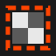

TopologicGlue the edges of a board together and the board becomes a surface: a torus, a Klein bottle, a projective plane. The rules never change. Pick a board, compare its three views, then play. Read about the math.
Each edge either glues to another edge (straight across, flipped, or turned a quarter), mirrors back onto itself, or is a wall. A piece crossing a glued edge reappears where it is glued.
Copies of the board laid edge to edge, each turned or mirrored the way the edges are glued. A straight move in the game is a straight line through the copies.
Fold the board until glued edges meet: a torus, a Klein bottle, a projective plane. Rules and starting positions never change; on the torus, chess is checkmate before the first move.